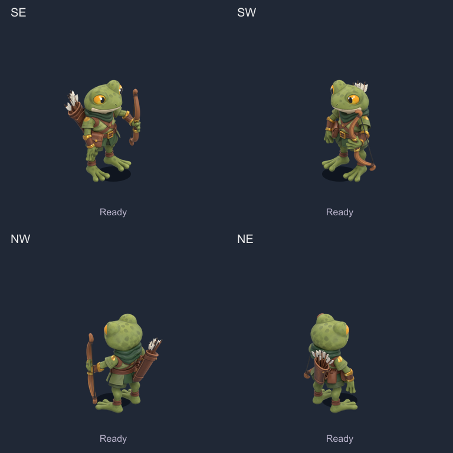
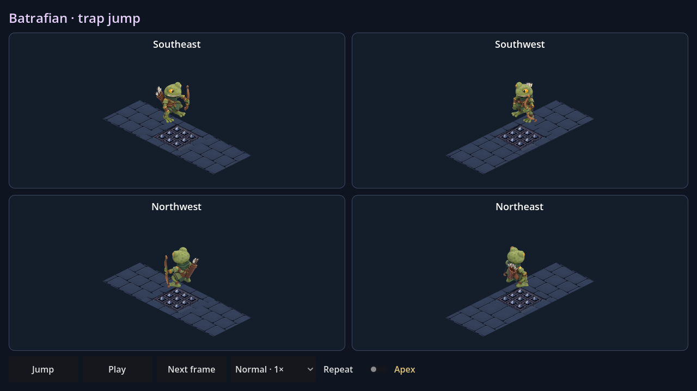

Batrafian — saut
Préparation, poussée, jambes repliées en vol, réception amortie puis retour au repos. Douze poses dans les quatre directions, sur une seconde. Arc et carquois conservent leur montage corrigé.

Vitesse normale · revue sur place avec hauteur et ombreRalenti ×0,5 · mêmes poses et même trajectoire
Dans Godot : ouvrir BatrafianJump.tscn, puis F6. Le héros franchit une case de pointes dans chacune des quatre directions. Commandes : Jump, Pause, Next frame, Repeat et vitesse jusqu'à ×2.

Scène native · passage au-dessus du piège
Source Blender · Recette et contrôles · Toutes les poses
Quatre atlas de sprites : 1,56 Mo de PNG. 363 contrôles natifs réussis. Scène d'essai isolée ; le saut n'est pas encore branché aux sprites du Batrafian dans les raids.